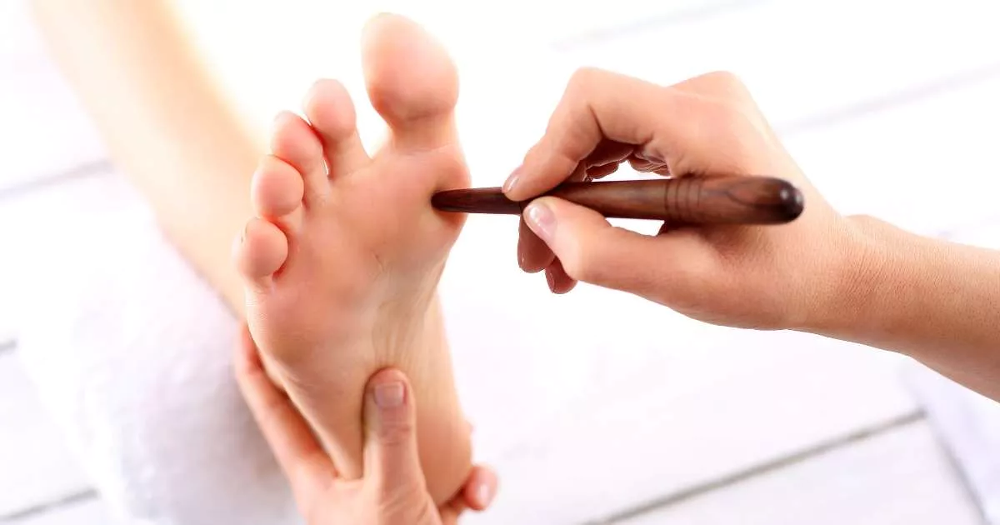
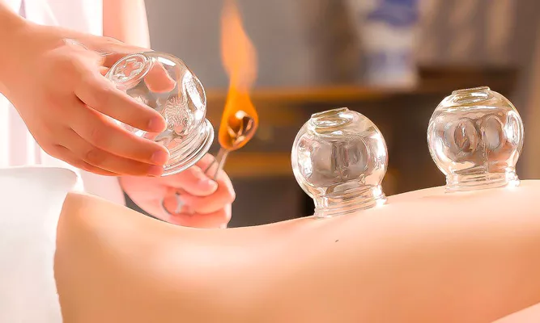
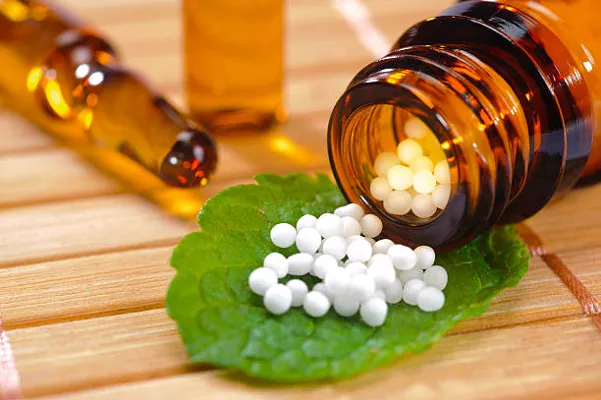
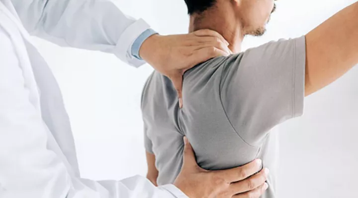
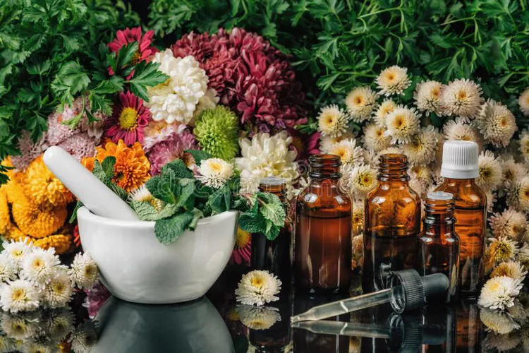
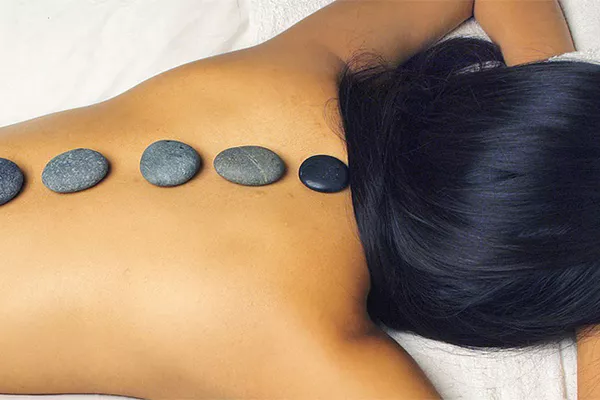
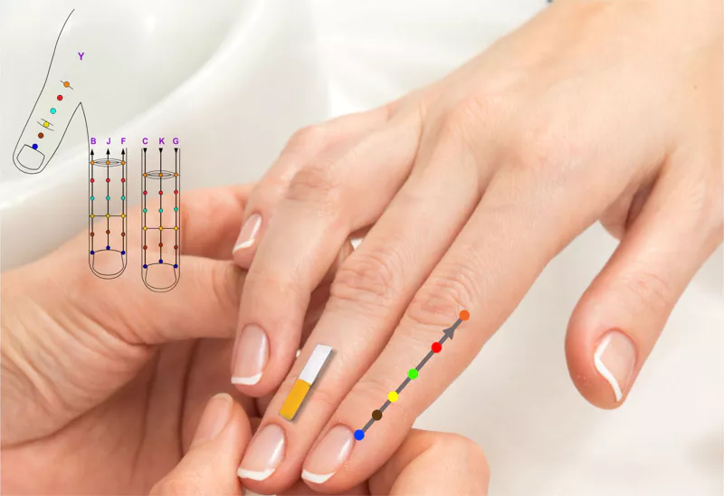
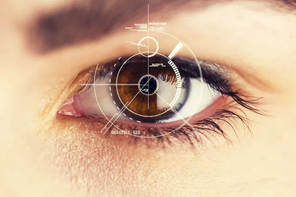
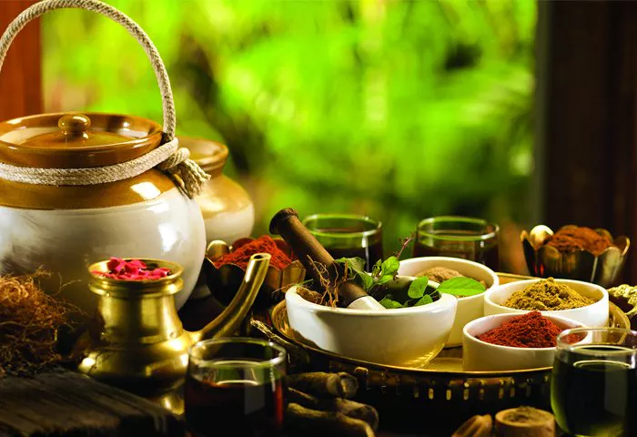

NALAM FOOT REFLEXOLOGY
NALAM FOOT REFLEXOLOGY
Pricing
CALL US
நலம் பாத அழுத்த சிகிச்சை மையம்
நலம் குடும்பத்தினர் அனைவருக்கும் வணக்கம், நாம் கேட்டுக்கொண்டதற்கிணங்க நம் குரு அவர்கள் தான் அறிந்து கொண்ட சிகிச்சை முறைகளை ஒன்றன் பின் ஒன்றாக ஞாயிற்று கிழமைகளில் (மாதம் இருமுறை) வகுப்புகளாக எடுக்க உள்ளார் காலை 9:30 மணி முதல் 5:30 மணி வரை செயல் முறை வகுப்புகள் நடைபெற உள்ளது

கப்பிங் தெரபி
(Cupping Therapy)
( Cupping therapy without kit)
--> கலசம்
--> Dry cup
--> Wet cup

பயோகெமிக்
(Biochemic)
Bio Combination (BC) medicines are homeopathic combinations
which contain salts.The body contains around 12 biochemical
minerals. Any imbalance in these minerals can create a
favourable environment for bacterial growth and increase the
risk of illness
( Bio-chemic with complete kit )
--> மனித உடலானது 12 தாது உப்புக்களால் ஆனது. எனவே அதை நோய்தெற்ப்ப பயன்படுத்தும் முறை.
-->12 Bio-salts benefits

முதுகெலும்பு சீரமைப்பு
(Spine alignment)
Basic + Advanced
A Spine alignment is a therapeutic treatment to manipulate
joints in your body to realign your spine and reduce pain
and discomfort. Spine adjustments complement traditional
medical care you receive.
( Spine alignment )
--> முதுகு தண்டுவடத்திலுள்ள 33 எலும்பு இணைப்புகளிலிருந்து வெளி வரும் நரம்புகளே உடலின் இயக்கத்தை கட்டுப்படுத்துகிறது. அதில் ஏற்படும் பாதிப்புகளை குணப்படுத்தும் முறை

மலர் மருத்துவம்
(Flower Remedy)
Bach flower remedies are an alternative or complementary
treatment that is used for emotional problems and pain.
They're made out of watered-down extracts from the flowers
of wild plants.
( Flower Remedy with kit )
--> 38 வகையான மலர் மருத்துகள்
--> ஒரு மருத்தானது ஒரு மனிதனின் 7 உலவியில் நோய்களை குணப்படுத்தும்
Eg : பயம்,காரண பயம் (பரிட்சை, நோய் , இரவு பயம்),
காரணமற்ற பயம் (கற்பனை பயம் , அமானுஷ்ய பயம், மற்றவர்கள் குறித்து பயம்).

காந்த மருத்துவம்
(Magnet therapy
)
Magnetic therapy is a pseudoscientific alternative medicine
practice involving the weak static magnetic field produced
by a permanent magnet which is placed on the body.
( Magnet therapy with kit )
--> காந்த புலன்களை கொண்டு நோய்களை குணப்படுத்தும் முறை.
Eg - i) காந்தத்தின் இரு துருவங்களை வலியுள்ள பாகத்தில் முறையாக பயன்படுத்துவதன் மூலம் உடனடியாக வலியை குணப்படுத்த முடியும்
ii) ஆறாத புண்களை காந்தத்தின் இரு துருவங்களை பயன்படுத்தி நீர் தயாரித்து சிகிச்சை அளிப்பதன் மூலம் புண்களை ஆற்றலாம்

நக சிகிச்சை
(Nail therapy)
Sujok, the alternate healing method is simple, easy and
produces effective results.In Sujok therapy, palm and foot
represent all the organs/meridians in the body. Su means
hand while jok means palm. Sujok can be done with other
therapies also and it produces no side effects.
( Nail therapy with Sujok for diagnosis )
Eg : நக கண்ணிற்கு கீழ் நகத்தில் வெண்ணிறத்தில் காணப்பட்டால் நீண்ட நாட்களாக சத்து குறைப்பாடு நோயுள்ளதாக அர்த்தம்.

நோயறிதலுக்கான இரிடியாலஜி
(Iridiology for Diagnosis)
Iridology (also known as iridodiagnosis or iridiagnosis) is
an alternative medicine technique whose proponents claim
that patterns, colors, and other characteristics of the iris
can be examined to determine information about a patient's
systemic health.
கண் கரு விழியில் மற்றும் வெண்மை பகுதியில் ஏற்படும் மாற்றங்கள் வைத்து நோய் கண்டறிதல்

பஞ்சகர்மா
(Panchakarma)
வர்ம பகுதியில் ஏற்படும் தாக்குதலினால் வரும் நோய்கள் எந்த மருந்திற்கும் கட்டுப்படாது. அப்படிப்பட்ட தசைப்பகுதி மற்றும் மூட்டு பகுதி நோய்களை குணப்படுத்தும் முறை
* வர்ம மசாஜ்
* இலைக் கிலி
* பொடிக் கிலி
* நெய் கிலி
* நவரக் கிலி
* ஆவிக் கிலி
* வாழை இலைக் குளியல்
* மண் பட்டி
* பற்று சிகிச்சை

உடலியக்க சிகிச்சை
(chiropractic)
Chiropractic is a form of alternative medicine concerned with
the diagnosis, treatment and prevention of mechanical
disorders of the musculoskeletal system, especially of the
spine.
சிரோபிராக்டிக் என்பது தசைக்கூட்டு அமைப்பின், குறிப்பாக முதுகுத்தண்டின் இயந்திரக் கோளாறுகளைக் கண்டறிதல், சிகிச்சை மற்றும் தடுப்பு ஆகியவற்றுடன் தொடர்புடைய மாற்று மருத்துவத்தின் ஒரு வடிவமாகும்.